<!-- .slide: class="title-slide opening-slide" --> # Deep Learning Perception ## for Autonomous Driving **Gabriele Graffieti** <span class="subtitle">Autonomous Driving and ADAS Technologies Seminar</span> <div class="title-meta"> <span>University of Parma</span> <span>Nov. 9, 2026</span> </div> --- <!-- .slide: class="no-fragments" --> ## Who I am <div class="two-c-container"> <div class="two-c-col-l"> <img class="speaker-avatar" src="./img/speaker-photo.jpg" alt="Portrait of Gabriele Graffieti"> </div> <div class="two-c-col-r"> <ul> <li>Sr. Algorithm Engineer @ <a href="https://www.ambarella.com">Ambarella</a> <ul> <li>Deep Learning & Computer Vision</li> <li>Perception team</li> </ul> </li> <li>Past researcher & PhD student @ <a href="https://www.unibo.it/en">University of Bologna</a></li> <li>Past Head of AI Research @ <a href="https://www.aiforpeople.org">AI for People</a></li> <li>Member of many AI/ML associations</li> </ul> </div> </div> --- ## Outline - **Foundations**: the autonomous-driving stack, sensors, and four hard problems - **Representations**: images, point clouds, BEV, occupancy, and vectors - **Core tasks**: detection and tracking, occupancy and free space, mapping and topology, motion forecasting - **Multitask**: UniAD and PARA-Drive, perception trained together with planning - **Frontiers**: generative simulation, world models, end-to-end driving, VLMs, VLAs, and decision models --- <!-- .slide: class="no-fragments" --> ## Prerequisites This talk assumes basic familiarity with: - Vectors, matrices, tensors, and basic linear algebra - Supervised learning, losses, and gradient descent - Neural networks and convolutional neural networks - Sequence models, attention, and Transformers No prior knowledge of autonomous driving is required. <div class="space-small"></div> <div class="callout activity fragment" data-fragment-index="1"> <span class="tag">Choose your path</span> <p class="mini">Need a quick refresher? Press <b>↓</b><br>Ready for autonomous driving? Press <b>→</b></p> </div> -- <!-- .slide: data-visibility="uncounted" class="optional-slide" --> ## Vectors, matrices, and tensors <ul> <li class="fragment" data-fragment-index="0"><strong>Scalar</strong>: one value, such as a loss or learning rate</li> <li class="fragment" data-fragment-index="1"><strong>Vector</strong>: an ordered list, such as velocity or a feature embedding</li> <li class="fragment" data-fragment-index="2"><strong>Matrix</strong>: a 2D grid, such as a grayscale image or a linear transformation</li> <li class="fragment" data-fragment-index="3"><strong>Tensor</strong>: an <em>n</em>-dimensional array—the general container used by deep-learning frameworks</li> </ul> <div class="callout example fragment" data-fragment-index="4"> <span class="tag">Example</span> <p class="mini">Surround-view video → 6D tensor:<br>batch × time × cameras × channels × height × width</p> </div> <div class="callout example fragment" data-fragment-index="5"> <span class="tag">Not everything is a grid</span> <p class="mini">LiDAR sweep → N × 4 set of points (x, y, z, intensity):<br>no natural order, and N changes from sweep to sweep</p> </div> <p class="mini text-align-center fragment" data-fragment-index="6">How would you represent this data?</p> -- <!-- .slide: data-visibility="uncounted" class="optional-slide" --> ## Neural Networks - Built from artificial neurons: <span class="math-inline">h = σ(w<sup>T</sup>x + b)</span> - Neurons side by side form a layer; stacking layers forms a (deep) neural network that learns a parameterized mapping <span class="math-inline">ŷ = f<sub>θ</sub>(x)</span> from examples - Each layer transforms simple input features into increasingly meaningful representations - Non-linear activations (Tanh, Sigmoid, ReLU, etc.) let stacked layers model complex functions - Training chooses parameters <span class="math-inline">θ</span> (weights and biases) that minimize a task-specific loss: <span class="math-inline">θ<sup>*</sup> = arg min<sub>θ</sub> L(f<sub>θ</sub>(x), y)</span> -- <!-- .slide: data-visibility="uncounted" class="text-align-center optional-slide" --> <img class="diagram light-invert" src="./img/neural-network.png" style="height: 20em;" alt="Fully connected network with an input layer, one hidden layer, and an output layer"> -- <!-- .slide: data-visibility="uncounted" class="optional-slide" --> ## Backpropagation <ul> <li class="fragment" data-fragment-index="0"><strong>Forward pass</strong>: compute predictions and the loss</li> <li class="fragment" data-fragment-index="1"><strong>Backward pass</strong>: apply the chain rule from the loss back through every operation</li> <li class="fragment" data-fragment-index="2"><strong>Gradients</strong>: measure how each parameter affects the loss</li> <li class="fragment" data-fragment-index="3"><strong>Optimizer step</strong>: update parameters in the direction that reduces the loss</li> </ul> <div class="equation fragment" data-fragment-index="4">∂L/∂w = ∂L/∂h · σ′(w<sup>T</sup>x + b) · x</div> <div class="equation fragment" data-fragment-index="4">θ ← θ − η · ∂L / ∂θ</div> -- <!-- .slide: data-visibility="uncounted" class="optional-slide" --> ## CNNs: why they fit images - **Local receptive fields**: nearby pixels are strongly related, so each filter initially examines a small neighborhood - **Growing context**: stacking layers expands the receptive field—from edges and textures to parts and complete objects - **Weight sharing**: the same filter scans every position and can recognize a feature wherever it appears - **Parameter efficiency**: a convolution uses <span class="math-inline">k² · C<sub>in</sub> · C<sub>out</sub></span> parameters, independent of image width and height - **Translation equivariance**: shifting the input shifts the feature map instead of requiring the pattern to be relearned - **Spatial output**: CNNs preserve feature maps, making them natural backbones for detection and segmentation -- <!-- .slide: data-visibility="uncounted" class="text-align-center optional-slide" --> <img class="diagram transparent light-invert" src="./img/cnn.png" alt="CNN pipeline: convolution and pooling layers extract features, then fully connected layers classify the image"> <div class="source">Figure: <a href="https://medium.com/towards-data-science/a-comprehensive-guide-to-convolutional-neural-networks-the-eli5-way-3bd2b1164a53">S. Saha, “A Comprehensive Guide to Convolutional Neural Networks,” Towards Data Science, 2018</a></div> -- <!-- .slide: data-visibility="uncounted" class="optional-slide" --> ## RNNs: memory for sequences - **Recurrent update**: process one step at a time while maintaining a memory of the past - **Hidden state**: compress past observations into a memory passed to the next step <span class="math-inline">h<sub>t</sub> = f<sub>θ</sub>(x<sub>t</sub>, h<sub>t−1</sub>)</span> - **Shared parameters**: reuse the same transformation at every time step - **Perception uses**: combine track histories, trajectories, or successive sensor observations - **Long-term memory**: vanilla RNNs suffer from vanishing or exploding gradients; LSTM/GRU add gates that control what to remember - **Main limitation**: recurrence is sequential and difficult to parallelize, so temporal attention often replaces or complements it -- <!-- .slide: data-visibility="uncounted" class="text-align-center optional-slide" --> <img class="diagram transparent light-invert" src="./img/rnn.png" alt="A recurrent network folded on the left and unrolled over three time steps on the right"> <p class="mini muted">In the figure, <span class="math-inline">s<sub>t</sub></span> is the hidden state <span class="math-inline">h<sub>t</sub></span>; U, W, and V are shared at every step.</p> <div class="source">Figure: <a href="https://commons.wikimedia.org/wiki/File:Recurrent_neural_network_unfold.svg">fdeloche, Wikimedia Commons</a>, <a href="https://creativecommons.org/licenses/by-sa/4.0/">CC BY-SA 4.0</a> (colors adapted)</div> -- <!-- .slide: data-visibility="uncounted" class="optional-slide" --> ## Transformers: attention is all you need <div class="equation">Attention(Q, K, V) = softmax(QK<sup>T</sup> / √d<sub>k</sub>) V</div> - **Query = question**: what information am I looking for? - **Key = description**: what does each candidate contain, and how relevant is it to the query? - **Value = content**: the information retrieved from each candidate—not a judgment of how “valuable” it is - **Attention weights**: compare the query with every key, then compute a weighted mixture of the values - **Self-attention**: queries, keys, and values come from the same sequence - **Cross-attention**: queries attend to another source, such as cameras, time steps, BEV cells, or object features -- <!-- .slide: data-visibility="uncounted" class="text-align-center optional-slide" --> <img class="diagram wide transparent" src="./img/attention-steps.svg" data-light-src="./img/attention-steps-light.svg" alt="Attention in four steps: project tokens to queries, keys, and values; score every query against every key; normalize each row with softmax; mix the values with those weights"> Note: Walk through query 4: it matches key 5 best, so value 5 dominates output 4. -- <!-- .slide: data-visibility="uncounted" class="optional-slide" --> ## Transformers: three details that matter later - **Multi-head attention**: several attention operations run in parallel, each free to specialize in a different relation (appearance, geometry, motion) - **Positional encoding**: attention by itself ignores order and position, so each token carries an explicit position—in driving, often a 3D position derived from camera geometry - **Quadratic cost**: every query scores every key, so cost grows with <span class="math-inline">N<sub>q</sub> × N<sub>k</sub></span> ~ <span class="math-inline">O(N²)</span> for self-attention <div class="callout example fragment"> <span class="tag">Back of the envelope</span> <p class="mini">A 200 × 200 BEV grid = 40,000 queries; six 900 × 1600 cameras at stride 16 ≈ 34,000 keys<br>→ more than 10⁹ query–key pairs per layer. This is why driving models sample only a few points per query (deformable or sparse attention).</p> </div> -- <!-- .slide: data-visibility="uncounted" class="optional-slide" --> ## Vision Transformers: images as tokens <ul> <li class="fragment" data-fragment-index="0"><strong>Patchify</strong>: split an <span class="math-inline">H × W</span> image into <span class="math-inline">P × P</span> patches, producing <span class="math-inline">N = HW / P²</span> tokens</li> <li class="fragment" data-fragment-index="1"><strong>Embed and locate</strong>: project each flattened patch into a feature vector and add positional information</li> <li class="fragment" data-fragment-index="2"><strong>Attend globally</strong>: from the first layer, each patch can exchange information with any other patch</li> <li class="fragment" data-fragment-index="3"><strong>Dense perception</strong>: hierarchical or windowed variants recover efficient multi-scale features for detection and segmentation</li> </ul> <div class="callout example fragment" data-fragment-index="4"> <span class="tag">Compare with CNNs</span> <p class="mini">ViTs trade strong locality and translation biases for flexible global interactions, usually requiring more data or pretraining</p> </div> -- <!-- .slide: data-visibility="uncounted" class="text-align-center optional-slide" --> <img class="diagram transparent" src="./img/vit.png" alt="Vision Transformer: image patches are linearly projected, combined with position embeddings, and processed by a Transformer encoder"> <div class="source">Figure: <a href="https://arxiv.org/abs/2010.11929">Dosovitskiy et al., “An Image Is Worth 16×16 Words,” ICLR 2021</a></div> -- <!-- .slide: data-visibility="uncounted" class="optional-slide" --> ## Queries and set prediction <ul> <li class="fragment" data-fragment-index="0"><strong>Query</strong>: a learnable slot that asks the model to find and describe one possible entity</li> <li class="fragment" data-fragment-index="1">Each query attends to scene features and predicts a structured item—or <strong>nothing</strong></li> <li class="fragment" data-fragment-index="2"><strong>Set output</strong>: prediction order has no meaning; only the collection of items matters</li> <li class="fragment" data-fragment-index="3"><strong>One-to-one matching</strong> assigns predictions to targets during training and discourages duplicate outputs (Hungarian matching)</li> <li class="fragment" data-fragment-index="4">The same abstraction can represent objects, lanes, tracks, agents, or possible trajectories</li> </ul> <div class="nav-hint fragment" data-fragment-index="5">Refresher complete — press → for the main talk</div> --- <!-- .slide: class="section-slide" --> # The autonomous-driving stack <br> <img class="diagram wide transparent" src="./img/ad-stack.svg" data-light-src="./img/ad-stack-light.svg" alt="Autonomous driving stack diagram"> Note: Data flows left to right: sensors, localization and perception, prediction, planning, control, vehicle. The circles overlap on purpose: modern systems blur these boundaries (we will see UniAD and PARA-Drive later). The dashed arrow is the closed loop: the ego vehicle's actions change what other agents do, so prediction is never computed on a frozen world. This talk focuses on perception and touches prediction. --- ## Perception is the vehicle’s senses <div class="two-c-container"> <div class="two-c-col"> <img class="diagram" src="./img/nuscenes-sensor-setup.jpg" alt="Top view of the nuScenes car with six cameras, one roof LiDAR, five radars, and an IMU"> </div> <div class="two-c-col"> <ul> <li><strong>Where</strong> everything is, in meters rather than pixels</li> <li><strong>What</strong> it is: vehicle, person, lane, or traffic light</li> <li><strong>How it moves</strong>, and that the same object stays the same object over time</li> <li><strong>What we cannot see</strong>, and how sure we are about the rest</li> </ul> </div> </div> <div class="source">Sensor setup of the nuScenes car — <a href="https://arxiv.org/abs/1903.11027">Caesar et al., CVPR 2020</a></div> Note: Perception is not only object detection. Use this slide to set the broad scope: static structure, dynamic agents, traffic controls, free space, and time. The nuScenes car is a typical research platform: 6 cameras for 360° coverage, 1 roof LiDAR, 5 radars, GNSS and IMU. --- <!-- .slide: class="no-fragments" --> ## Sensors: there is no free lunch <table class="sensor-table"> <thead> <tr><th>Sensor</th><th>Typical range</th><th>Measures well</th><th>Main weaknesses</th><th>Cost</th></tr> </thead> <tbody> <tr><td><b>Camera</b></td><td>~150–250 m (optics-dependent)</td><td>color, texture, signs, lights, lanes</td><td>no direct depth; glare, night, blur, fog, rain</td><td>$</td></tr> <tr><td><b>LiDAR</b></td><td>~100–250 m</td><td>metric 3D geometry, cm-level range; 10–20 Hz</td><td>sparse at range; heavy rain, fog, snow</td><td>$$–$$$</td></tr> <tr><td><b>Radar</b></td><td>~200–300 m</td><td>direct radial (Doppler) velocity; works in fog and dark</td><td>coarse angle, few points, multipath “ghosts”</td><td>$</td></tr> <tr><td><b>Ultrasonic</b></td><td>~0.2–5 m</td><td>very-near obstacles at parking speed</td><td>tiny range, slow update</td><td>¢</td></tr> <tr><td><b>Thermal</b></td><td>~100–200 m</td><td>heat contrast: pedestrians and animals at night</td><td>low resolution and texture</td><td>$$</td></tr> <tr><td><b>GNSS / IMU</b></td><td>—</td><td>ego pose and motion (cm-level with RTK)</td><td>IMU drift; GNSS outage and multipath in cities and tunnels</td><td>$–$$</td></tr> </tbody> </table> <p class="mini muted">Typical automotive values; they vary widely by product and price.</p> <p class="thought">Sensor fusion is less like voting and more like a group project: everyone brings different information—and different problems.</p> --- ## Same scene, three sensors <iframe class="diagram" data-src="https://www.youtube.com/embed/ym-eRYplU8A?rel=0&modestbranding=1&mute=1" data-autoplay allow="autoplay; fullscreen; encrypted-media; picture-in-picture" allowfullscreen title="Altos Radar and LiDAR point cloud comparison"></iframe> <div class="source"><a href="https://www.youtube.com/watch?v=ym-eRYplU8A">Altos Radar — radar and LiDAR point cloud comparison</a>, Jan. 5, 2024</div> <div class="callout quiz fragment"><span class="tag">Food for thought</span><p class="mini">If a camera recognizes a pedestrian but estimates poor depth, while LiDAR sees a shape but not its class—which sensor is “right”?</p></div> Note: The clip compares an Altos V1 4D radar with a Hesai AT128 LiDAR on one drive (South San Francisco Bay, Jan. 5, 2024). Radar points are drawn larger than LiDAR points. Point out how few radar returns there are, and that each one carries velocity, while LiDAR gives the geometry. Quiz answer: neither sensor alone. Each is right about a different property; fusion must keep the useful part of each and know which one to trust when they disagree. --- <!-- .slide: class="hidden-slide" --> ## Radar is having a moment: 4D imaging radar - **Conventional radar** measures range, azimuth, and Doppler velocity—but has poor elevation: is that return a bridge or a stopped truck? - **4D imaging radar** adds elevation and much finer angular resolution through large virtual antenna arrays (MIMO) - Denser, LiDAR-like point clouds that keep radar's strengths: velocity per point, weather robustness, low cost - Still noisier and sparser than LiDAR; public datasets are recent and small <div class="source"><a href="https://tudelft-iv.github.io/view-of-delft-dataset/">View-of-Delft — Palffy et al., RA-L 2022</a> · <a href="https://github.com/kaist-avelab/K-Radar">K-Radar — Paek et al., NeurIPS 2022</a></div> --- <!-- .slide: class="no-fragments" --> ## What would you mount on the car? <div class="callout poll"> <span class="tag">Quick poll</span><span class="time">60s</span> <p class="mini">Design a perception suite for one scenario:</p> <ul class="mini"> <li>urban robotaxi;</li> <li>highway truck;</li> <li>low-speed delivery robot.</li> </ul> </div> <p class="fragment thought">Now remove one sensor type. What becomes unobservable—or merely less reliable?</p> --- ## What the industry chose - **Waymo (6th generation)**: 13 cameras, 4 LiDARs, 6 radars, and external microphones—redundancy across three modalities - **Zoox**: 28 cameras, 16 LiDARs, 20 radars, plus thermal cameras and microphones—the same pod on all four corners, because the vehicle drives equally well in either direction - **Tesla Vision**: cameras only—radar removed from 2021, ultrasonic sensors from 2022 - **nuScenes research car**: 6 cameras, 1 LiDAR, 5 radars, GNSS/IMU - Same physics, different bets: cost, scale, operating domain, and how much risk the software must absorb <div class="callout takeaway fragment"><span class="tag">Design rule</span><p class="mini">Choose sensors from the Operational Design Domain—not from a universal ranking.</p></div> <div class="source fragment"><a href="https://waymo.com/blog/2024/08/meet-the-6th-generation-waymo-driver">Waymo, Aug 2024</a> · <a href="https://zoox.com/journal/perception">Zoox perception</a> · <a href="https://www.tesla.com/support/transitioning-tesla-vision">Tesla Vision transition</a> · <a href="https://arxiv.org/abs/1903.11027">nuScenes car — Caesar et al., CVPR 2020</a></div> Note: Reveal after the poll. Ask which of the three poll scenarios each choice fits best. Camera-only bets that learning can recover depth and robustness from data at fleet scale; multi-sensor bets on physical redundancy. Zoox is the extreme of that bet: a bidirectional vehicle, so each corner carries the same cameras, LiDAR, radar, thermal camera, and microphones. The 28/16/20 counts come from Zoox's published corner-pod layout. --- <!-- .slide: class="section-slide hidden-slide" --> # Four severe problems ### that deserve lectures of their own Calibration · synchronization · ego-motion · failure handling --- <!-- .slide: class="hidden-slide" --> ## Calibration and coordinate frames <div class="two-c-container"> <div class="two-c-col"> <h4>Intrinsics</h4> <p>How a camera maps rays to pixels.</p> <h4>Extrinsics</h4> <p>Rigid transforms between sensor, ego, and world frames.</p> </div> <div class="two-c-col"> <h4>The danger</h4> <p>A small angular error becomes a large spatial error far away: 0.5° of yaw is ~0.44 m sideways at 50 m and ~0.9 m at 100 m.</p> <h4>The reality</h4> <p>Temperature, vibration, repairs, and time can change calibration.</p> </div> </div> <div class="equation">p<sub>ego</sub> = T<sub>sensor→ego</sub> · p<sub>sensor</sub></div> --- ## Time alignment, ego-motion, and failures - Sensors expose data at different rates and latencies - The car moves while a camera scans and a LiDAR rotates—one 10 Hz sweep spans 100 ms - Past features must be warped into a common frame before temporal fusion - Failure handling needs detection, degradation, and a safe fallback <div class="failure-row fragment"> <span>timestamp drift</span><span>rolling shutter</span><span>packet loss</span><span>occlusion</span><span>dirty lens</span> </div> <div class="callout activity fragment"><span class="tag">Take seriously</span><p class="mini">A 100 ms timing error at 90 km/h is 2.5 m of travel—what the car covers during one 10 Hz LiDAR sweep. “Almost synchronized” can be geometrically wrong in a drastic way.</p></div> Note: Do not teach calibration in depth here. Emphasize that every later architecture quietly assumes these foundations are sufficiently correct. Without motion compensation, the start and end of a single LiDAR sweep at highway speed disagree by meters. --- <!-- .slide: class="section-slide" --> # Representing the scene <img class="diagram wide" src="./img/representations.svg" data-light-src="./img/representations-light.svg" alt="Image to BEV, occupancy, objects and maps"> --- ## Image space, BEV, and point clouds - **Image space** - Dense color and texture, but scale shrinks with depth and near objects hide the rest - A pixel is a direction, not a distance - **BEV space** - A top-down grid fixed to the ego vehicle, with one cell size at every range - Can be 2D (cell-based) or 3D (voxel-based), depending on the task - The shared frame for cameras, LiDAR, maps, and planning - **Point clouds** - Irregular 3D samples, already in meters, with no grid and no natural order - Sparse, and sparser with range: hundreds of LiDAR points on a car at 10 m, often fewer than five past 50 m. Radar stays near one return per object <div class="source fragment"><a href="https://arxiv.org/abs/1903.11027">nuScenes — Caesar et al., CVPR 2020</a> (supplementary)</div> --- ## What each one looks like <div class="output-grid three"> <div> <b>Image space</b> <p>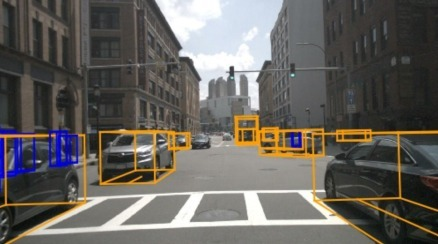</p> <small>Near cars fill the frame. The crosswalk, just as real, is a thin band of pixels.</small> </div> <div> <b>BEV space</b> <p>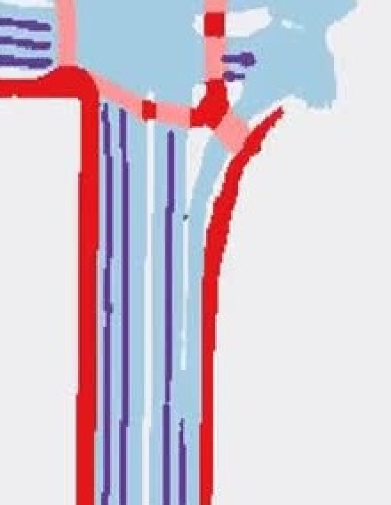</p> <small>A top-down grid: lanes and drivable surface, the same meters per cell near and far.</small> </div> <div> <b>Point cloud</b> <p>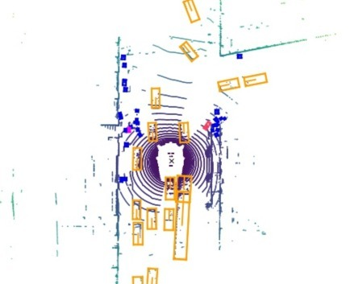</p> <small>One sweep from above. Dense rings nearby, thin returns in the distance.</small> </div> </div> <div class="source">Image and LiDAR: <a href="https://arxiv.org/abs/1903.11027">nuScenes — Caesar et al., CVPR 2020</a>. BEV grid: <a href="https://arxiv.org/abs/2205.13542">BEVFusion — Liu et al., ICRA 2023</a>. Three different drives.</div> --- ## Point clouds need their own encoders - **Point-based (PointNet)**: a shared MLP per point, then a symmetric pooling, so the output ignores point order - **Voxels + sparse convolution (VoxelNet, SECOND)**: quantize space and convolve only where voxels are occupied - **Pillars (PointPillars)**: collapse height into vertical columns, producing a 2D BEV pseudo-image for an ordinary CNN - Most LiDAR detectors end in BEV—so BEV becomes the natural meeting point for cameras too <div class="equation fragment">f(x<sub>1</sub>, …, x<sub>N</sub>) = γ( max<sub>i</sub> h(x<sub>i</sub>) ) — same answer for any ordering of the points</div> <div class="source fragment"> <a href="https://arxiv.org/abs/1612.00593">PointNet — CVPR 2017</a> · <a href="https://arxiv.org/abs/1711.06396">VoxelNet — CVPR 2018</a> · <a href="https://www.mdpi.com/1424-8220/18/10/3337">SECOND — Sensors 2018</a> · <a href="https://arxiv.org/abs/1812.05784">PointPillars — CVPR 2019</a> </div> --- ## Bird’s-eye view (BEV) - Image space has no meters, and a point cloud has no grid. BEV is the metric grid both can share - It is where the sensors meet: cameras arrive through a view transform, LiDAR and radar through pillars or voxels - In that grid a vehicle keeps its true size at 10 m and at 50 m, so distance and motion compare directly - It is the representation of choice for most of the tasks ahead: detection, tracking, mapping, and forecasting. Occupancy keeps a 3D volume <div class="thought fragment">BEV is not a task. It is the coordinate system the other tasks share.</div> --- ## From perspective to BEV: the view transform - **Inverse perspective mapping (IPM)**: assume a flat ground and warp the image with a homography—fine for lane paint, wrong for anything above the road - **Lift-Splat (forward projection)**: predict a depth distribution per pixel, lift features along each ray, and splat them into BEV cells - **BEV queries (backward projection)**: each BEV cell projects 3D reference points into the cameras and pulls the features it needs <div class="equation fragment">lift: f(u, v, d) = α<sub>d</sub>(u, v) · c(u, v) — c(u, v) is the feature vector at that pixel, α a softmax over D depth bins</div> <p class="thought fragment">The hard part is always depth: a pixel is a ray, not a point.</p> <div class="source fragment"> <a href="https://arxiv.org/abs/2008.05711">Lift, Splat, Shoot — Philion & Fidler, ECCV 2020</a> · <a href="https://arxiv.org/abs/2203.17270">BEVFormer — Li et al., ECCV 2022</a> </div> --- ## BEVFormer: camera features → BEV queries - **BEV queries**: one learned vector per cell, each responsible for a fixed (x, y) around the ego vehicle - **Spatial cross-attention**: the cell projects into the cameras that can see it and samples image features at several heights - **Temporal self-attention**: ego motion brings the previous BEV into the current frame, and each cell attends to its location there - **One grid, two heads**: 3D boxes and the map are both read out of this BEV Note: This is backward projection in practice. Deformable attention keeps the cost manageable: each BEV query samples only a few points around its projected reference points (the quadratic-cost problem from the refresher). --- ## BEVFormer architecture <p>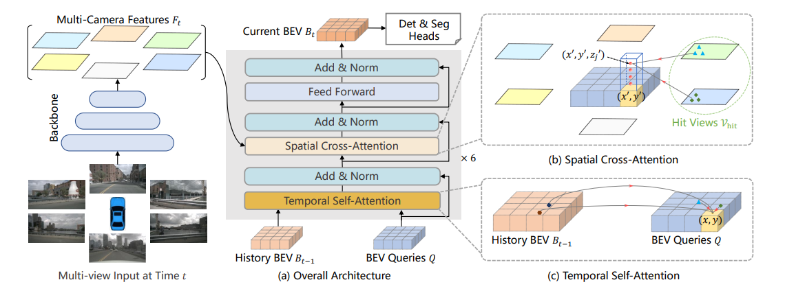</p> <div class="source"><a href="https://arxiv.org/abs/2203.17270">BEVFormer — Li et al., ECCV 2022</a></div> --- ## BEVFormer in action <video class="diagram" data-autoplay muted loop playsinline src="./videos/bevformer-demo.mp4"></video> <p class="mini muted">Six cameras in, one BEV out: 3D boxes in the BEV (left) and projected back into each camera (right).</p> <div class="source">Demo video: <a href="https://github.com/fundamentalvision/BEVFormer">fundamentalvision/BEVFormer</a></div> --- ## Four complementary outputs - **Object sets** — boxes, classes, velocities, tracks - **Occupancy fields** — free, occupied, semantic, unknown - **Vector maps** — lanes, boundaries, topology - **Future distributions** — possible motions and probabilities <p class="fragment thought">No representation is complete. Boxes are compact; occupancy sees arbitrary shapes; graphs express connectivity.</p> --- ## Perception tasks - **Entities (Boxes)** — detection and tracking - **Fields (Grid)** — segmentation, free space, occupancy - **Structure (Graph)** — mapping, topology, association - **Futures (Distribution)** — motion forecasting and occupancy flow - **Cross-cutting** — multitask learning, with planning in the loop <div class="callout takeaway fragment"><span class="tag">Structure</span><p class="mini">We will study each task through its output, architecture idea, failure modes, datasets, and small project ideas.</p></div> --- <!-- .slide: class="section-slide" --> # Task 1 — Obstacles ### Detect · localize · classify · persist --- ## What is object detection? - **2D:** image-space boxes, class, confidence - **3D:** center <span class="math-inline">(x, y, z)</span>, size <span class="math-inline">(l, w, h)</span>, and yaw <span class="math-inline">θ</span>—7 numbers in the ego frame, plus class and confidence - Often extended with velocity <span class="math-inline">(v<sub>x</sub>, v<sub>y</sub>)</span>, attributes, and uncertainty - Must handle scale, occlusion, truncation, crowded scenes, and long range <p>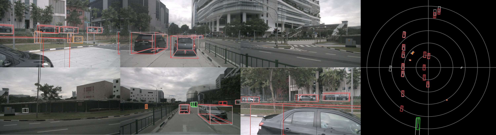</p> <div class="source fragment">Figure from <a href="https://arxiv.org/abs/2510.10287v1">Käppeler et al., arXiv preprint (2025)</a></div> --- ## Classic detection: one box per object - **Faster R-CNN (2015)**: two stages. Anchors propose candidate boxes, then a second head classifies and refines each one - **YOLO (2016)**: one stage. Divide the image into a grid and predict the boxes in a single forward pass - **SSD (2016)**: the same one-stage idea on feature maps at several scales, so small and large objects share one network - All three emit many overlapping boxes. Non-maximum suppression then keeps a single box per object <div class="source fragment"> <a href="https://arxiv.org/abs/1506.01497">Faster R-CNN — Ren et al., NIPS 2015</a> · <a href="https://arxiv.org/abs/1506.02640">YOLO — Redmon et al., CVPR 2016</a> · <a href="https://arxiv.org/abs/1512.02325">SSD — Liu et al., ECCV 2016</a> </div> --- ## DETR: a fixed set of queries - **A fixed output**: the decoder has N queries, and every query predicts a class and a box on every image. The COCO model uses N = 100 - **One object, one query**: Hungarian matching finds the pairing with the lowest total cost. A pair costs how wrong the class is plus how wrong the box is, and each object is given to a single query - **Queries left over**: with fewer objects than queries, the extras are trained to predict “no object”, and inference discards them - **The limit**: with more objects than queries, one object gets no query and is missed. N is chosen larger than the crowds in the training set <div class="thought fragment">The queries are interchangeable. The assignment decides who takes which object, and that one-to-one rule is what keeps the set free of duplicates.</div> <div class="source fragment"><a href="https://arxiv.org/abs/2005.12872">DETR — Carion et al., ECCV 2020</a></div> --- ## DETR architecture <p>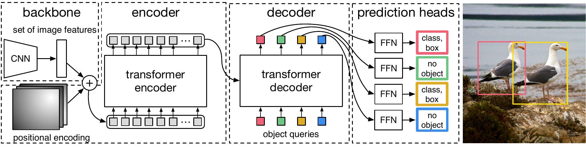</p> <p class="mini muted">Object queries enter the decoder. Each head emits a class and a box, or “no object”.</p> <div class="source">Architecture figure: <a href="https://arxiv.org/abs/2005.12872">Carion et al., ECCV 2020</a></div> --- <!-- .slide: class="hidden-slide" --> ## Why Hungarian matching matters <div class="equation">σ̂ = arg min<sub>σ</sub> Σ<sub>i</sub> L<sub>match</sub>(y<sub>i</sub>, ŷ<sub>σ(i)</sub>)</div> - Assign each ground-truth object to one prediction - Unmatched queries learn the “no object” class - Removes ambiguous many-to-one supervision - Inspired a family of query-based detectors, trackers, and map models <div class="thought fragment">Queries are reusable slots, not tiny object templates waiting at fixed locations.</div> --- ## 3D detection: from DETR to multiple cameras - **LiDAR baseline (CenterPoint)**: encode the sweep into BEV, predict a heatmap of object centers, then regress size, yaw, and velocity - **DETR3D**: each query holds a 3D reference point, projected into every camera to sample image features - **PETR**: adds 3D position embeddings to image features, so plain global attention knows the camera geometry - **StreamPETR**: carries object queries from frame to frame—temporal memory at almost no extra cost <p class="thought fragment">Same trick each time: a query asks the cameras where its 3D point appears.</p> <div class="source fragment"> <a href="https://arxiv.org/abs/2006.11275">CenterPoint — CVPR 2021</a> · <a href="https://arxiv.org/abs/2110.06922">DETR3D — CoRL 2021</a> · <a href="https://arxiv.org/abs/2203.05625">PETR — ECCV 2022</a> · <a href="https://arxiv.org/abs/2303.11926">StreamPETR — ICCV 2023</a> </div> --- ## Tracking: keeping identities over time - **Tracking-by-detection**: detect every frame, predict each track forward (Kalman filter), then match tracks to detections with Hungarian assignment - A simple baseline (AB3DMOT) remains surprisingly competitive - **Query-based tracking (MOTR-style)**: a track query follows its object across frames; fresh detection queries catch newcomers - Tracks provide identity, velocity, and history—exactly what forecasting consumes - Typical failures: identity switches in crowds, lost tracks under occlusion, ghost tracks from false positives <div class="equation fragment">predict x̂<sub>t</sub> = F x<sub>t−1</sub> → Hungarian match to detections → Kalman update</div> <div class="source fragment"> <a href="https://arxiv.org/abs/1907.03961">AB3DMOT — Weng et al., IROS 2020</a> · <a href="https://arxiv.org/abs/2105.03247">MOTR — Zeng et al., ECCV 2022</a> </div> --- <!-- .slide: class="no-fragments" --> ## Try it yourself: detection & tracking - **Datasets:** [KITTI](https://www.cvlibs.net/datasets/kitti/), [BDD100K](https://bdd-data.berkeley.edu/), [nuScenes](https://www.nuscenes.org/nuscenes) (start with nuScenes-mini: 10 scenes), [Waymo Open](https://waymo.com/open/) - **Toolkits:** [MMDetection3D](https://github.com/open-mmlab/mmdetection3d), [OpenPCDet](https://github.com/open-mmlab/OpenPCDet), [nuScenes devkit](https://github.com/nutonomy/nuscenes-devkit) - **Colab-sized:** fine-tune a pretrained [RT-DETR](https://arxiv.org/abs/2304.08069) or [Deformable DETR](https://arxiv.org/abs/2010.04159)—both converge far faster than the original DETR—on a small BDD100K subset - **Evaluation idea:** compare day/night or near/far AP - **Extension:** add a Kalman-filter tracker, temporal consistency, or calibration-error sensitivity --- <!-- .slide: class="section-slide" --> # Task 2 — Fields and occupancy ### What boxes cannot describe --- ## Segmentation and free space - **Semantic segmentation:** assign a class to every pixel or BEV cell - **Instance/panoptic segmentation:** separate individual objects - **Free space:** where the ego vehicle can physically move without collision - **Drivable area:** free space constrained by road rules and semantics <div class="callout activity fragment"><span class="tag">Important distinction</span><p class="mini">An empty sidewalk may be free of obstacles, but it is not necessarily drivable.</p></div> <div class="callout quiz fragment"><span class="tag">Quick quiz</span><p class="mini">Is the opposite lane, if no vehicle is present, free space? Is it drivable area?</p></div> --- ## 3D semantic occupancy - Predict every voxel as free, occupied, unknown, or a class such as road, sidewalk, or vehicle - Holds the shapes a box cannot: cones, curbs, debris, and the edge of a sidewalk - Makes occlusion and visibility explicit: an unseen cell stays unknown instead of silently empty - Costs memory and compute, and labeling every voxel is expensive --- ## Occupancy in action <video class="diagram" data-autoplay muted loop playsinline src="./videos/surroundocc-demo.mp4"></video> <p class="mini muted">Six cameras in (top left), semantic voxels out: road, sidewalk, vegetation, buildings, vehicles.</p> <div class="source">Demo video: <a href="https://github.com/weiyithu/SurroundOcc">SurroundOcc — Wei et al., ICCV 2023</a></div> --- <!-- .slide: class="hidden-slide" --> ## PanoOcc: a unified occupancy representation - Camera-based 3D panoptic scene understanding - Voxel queries aggregate multi-frame, multi-view image features - Produces semantic occupancy and instance-aware outputs - Good example of replacing separate dense tasks with one spatial representation <div class="source fragment"><a href="https://openaccess.thecvf.com/content/CVPR2024/html/Wang_PanoOcc_Unified_Occupancy_Representation_for_Camera-Based_3D_Panoptic_Segmentation_CVPR_2024_paper.html">PanoOcc — Wang et al., CVPR 2024</a></div> --- ## SparseOcc: efficiency changes the formulation - Dense volumes spend most of their compute on empty air - SparseOcc keeps about 5% of the voxels, the ones likely to be occupied, and sparse queries label only those - **RayIoU** casts a ray and scores the class and depth of the first hit. Voxel mIoU can still look good when that surface is thick and at the wrong distance - Seven past frames, cameras only: 34.0 RayIoU on Occ3D-nuScenes, at 17.3 FPS on an A100 <p class="thought fragment">A perfect representation that misses the real-time deadline is a very detailed description of the recent past.</p> <div class="source fragment"><a href="https://arxiv.org/abs/2312.17118">SparseOcc — Liu et al., ECCV 2024</a></div> --- ## SparseOcc in the scene <p>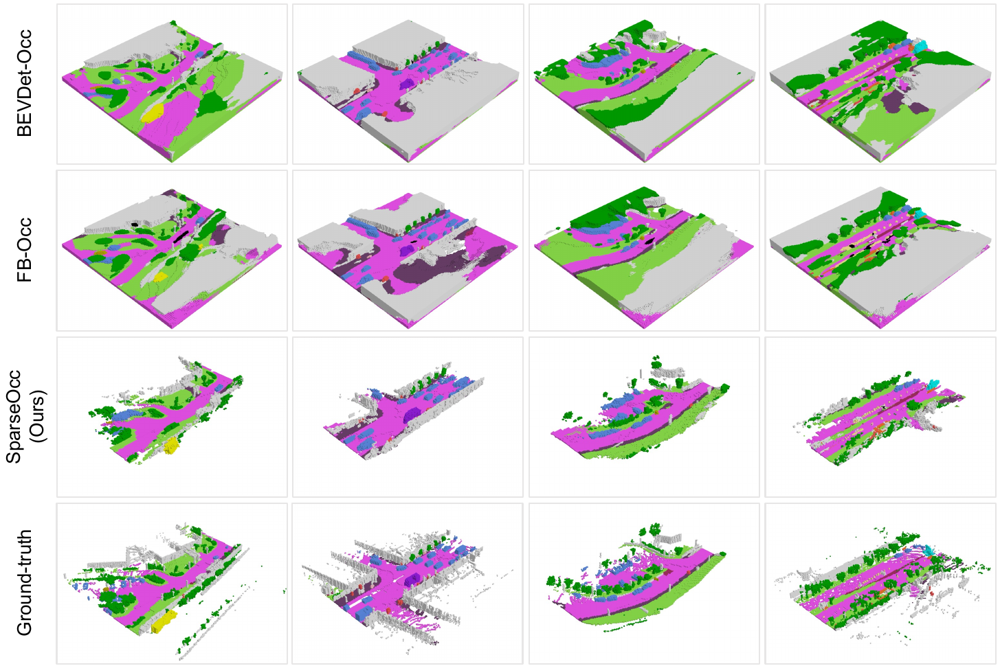</p> <p class="mini muted">Same scenes, top to bottom: two dense models, SparseOcc, and the ground truth. SparseOcc drops more than 90% of the voxels and still keeps the cone.</p> <div class="source">Figure: <a href="https://arxiv.org/abs/2312.17118">Liu et al., ECCV 2024</a></div> --- ## Current, dynamic, and future occupancy - **Now:** which voxels are filled, and by what: road, sidewalk, curb, cone, or vehicle - **Motion:** which of those cells are moving, and how fast. A curb stays put; a cone in the lane may not - **The next few seconds:** where the occupied cells will be - Occupancy flow gives the cells a velocity, so debris gets a trajectory without ever becoming a box - An unseen cell stays unknown in that forecast. Treating it as empty is a plan through whatever was hiding there <div class="thought fragment">The grid can carry an obstacle you have not classified yet.</div> --- <!-- .slide: class="no-fragments" --> ## Try it yourself: occupancy & free space - **Datasets:** [Occ3D-nuScenes](https://github.com/Tsinghua-MARS-Lab/Occ3D) (the grids in the videos), [SemanticKITTI](http://www.semantic-kitti.org/) (LiDAR, over time), [OpenOccupancy](https://github.com/JeffWang987/OpenOccupancy) - **Toolkits:** [SurroundOcc](https://github.com/weiyithu/SurroundOcc) and [SparseOcc](https://github.com/MCG-NJU/SparseOcc), both built on [MMDetection3D](https://github.com/open-mmlab/mmdetection3d) - **Colab-sized:** label one camera frame as drivable, sidewalk, or obstacle, and compare it with the Occ3D grid of the same instant - **Evaluation idea:** score the same prediction with voxel mIoU and with RayIoU. A thick surface can win the first and lose the second - **Extension:** on one scene, compare a dense grid with SparseOcc: how many voxels each keeps, and whether the cone is still there --- <!-- .slide: class="section-slide break-slide" --> # Break <div class="break-timer" data-minutes="10"> <button type="button" class="break-timer-step" data-step="-60" aria-label="Remove one minute">−</button> <button type="button" class="break-timer-display" aria-live="polite">10:00</button> <button type="button" class="break-timer-step" data-step="60" aria-label="Add one minute">+</button> </div> <p class="thought">Your brain just ran a perception stack for an hour: stereo depth, motion, semantics, and a very aggressive attention mechanism.<br>Let it rest!</p> Note: Click the time to start or pause the countdown. It stays at 10:00 until you do. − and + change it by one minute, including while it is running. At 00:00, click the time to start another countdown of the length you set. Halfway point: sensors, representations, detection/tracking, and occupancy are done. After the break: mapping, forecasting, fusion, evaluation, risks, frontiers. --- <!-- .slide: class="section-slide" --> # Task 3 — Mapping and topology ### From pixels to road structure --- ## How mapping is organized - **Offline mapping:** survey the roads once, annotate a global map, and carry that file in the car - **Localization:** estimate the ego pose in that map, so its lanes and lights land in the sensor frame - **Online mapping:** perceive the local map from the sensors now, where the stored map is missing or wrong - **Vectorized vs grid:** polylines and polygons a planner can follow, or a BEV raster a network paints. The same road can be stored as both - **Association:** which lanes connect, and which light, sign, or rule governs which lane --- ## Maps can be of different types - **HD map:** centimeter lanes, boundaries, crossings, signs, and lights, tied to a global frame. This is the offline map that localization reads - **SD map:** the navigation graph, at the scale of roads rather than lanes. It says where the trip goes, not which lane to occupy - **Topology map:** which lanes connect, and which signal controls which lane. It can be stored in the HD map or inferred on the spot - **Online local map:** lanes and boundaries perceived now, in the ego frame, from the sensors alone --- ## Offline HD maps - A survey fleet drives the roads. Annotators turn the logs into lanes, boundaries, crossings, signs, and lights in a global frame - The file also carries the rules attached to that geometry: speed, turn restrictions, and which light owns which lane - The car carries the file. Updating it means another survey and another annotation pass - Construction, a new crosswalk, or a repainted lane leaves the car with a confident description of a road that is no longer there <div class="thought fragment">A map is a prior, not a law of nature. Roads have the inconvenient habit of changing.</div> --- ## Localization on an HD map - The HD map is in a global frame and the sensors are on the car. Localization is the pose that puts one into the other - GNSS in a city is often meters off. A lane is only a few meters wide, so that error can select the wrong lane - **LocNet** learns whether a live LiDAR sweep (or a camera image) matches a place in a previously built point-cloud map, then estimates the metric pose from range - That pose lays the HD map’s lanes, lights, and topology into the ego frame. Online mapping, next, is for when the prior is missing or stale <div class="source fragment"><a href="https://arxiv.org/abs/1712.02165">LocNet — Yin et al., IV 2018</a></div> Note: LocNet’s stored map is a 3D point cloud, not the vector lanes themselves. The pose it recovers is what makes the HD map readable in the ego frame. Do not describe it as matching lane polylines. --- ## LocNet architecture <p>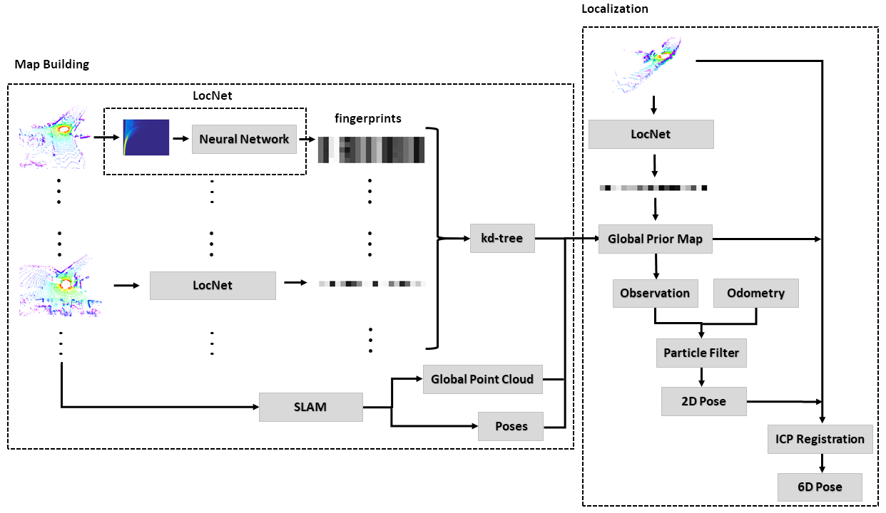</p> <p class="mini muted">Map building stores LiDAR fingerprints. Localization retrieves a place, then a particle filter and ICP turn it into a pose.</p> <div class="source">Architecture figure: <a href="https://arxiv.org/abs/1712.02165">Yin et al., IV 2018</a></div> --- ## Neural Map Prior: a map that keeps learning - A global neural map, stored as sparse tiles, sits between a frozen HD file and a purely online prediction - The local model cross-attends to the tile for this place, so an earlier traversal fills in what the current cameras cannot see - A learned fusion step writes today’s features back into the tile. The prior gets stronger as the fleet repeats the same roads - Bad weather and longer range are where it helps. A change no vehicle has observed yet is still missing from the tile <div class="source fragment"><a href="https://arxiv.org/abs/2304.08481">Neural Map Prior — Xiong et al., CVPR 2023</a></div> --- ## Neural Map Prior architecture <p>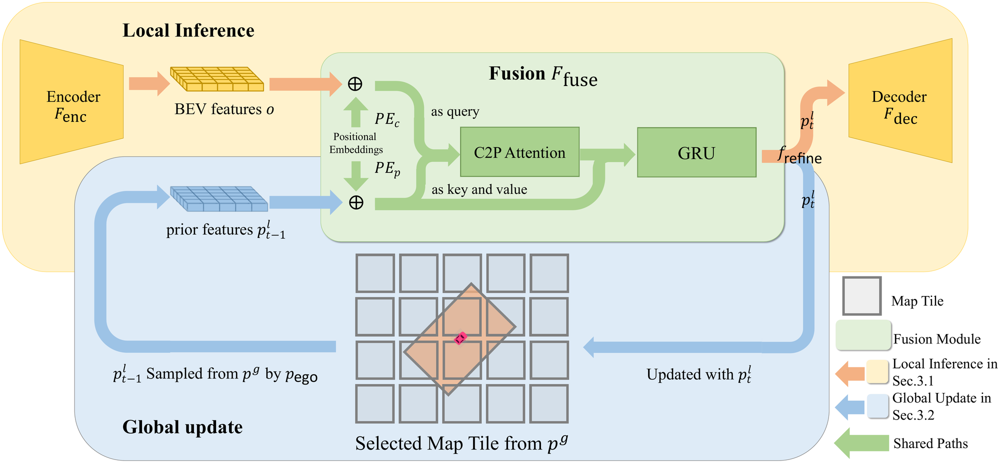</p> <p class="mini muted">Current BEV features query the stored tile. The fused map is written back for the next traversal.</p> <div class="source">Architecture figure: <a href="https://arxiv.org/abs/2304.08481">Xiong et al., CVPR 2023</a></div> --- ## MapTRv2: a map as structured sets - **Polylines, not pixels:** each lane, divider, crossing, and road boundary is an ordered list of points - **Two query levels:** one query owns the element, and a set of point queries places the vertices along it - **Either direction is valid:** a lane read left to right is the same lane read right to left, and the loss accepts both - **One element, one prediction:** Hungarian matching gives each ground-truth polyline to a single query, as DETR did for boxes <div class="source fragment"><a href="https://link.springer.com/article/10.1007/s11263-024-02235-z">MapTRv2 — Liao et al., IJCV 2025</a> · <a href="https://arxiv.org/abs/2308.05736">arXiv</a></div> --- ## MapTRv2 architecture <p>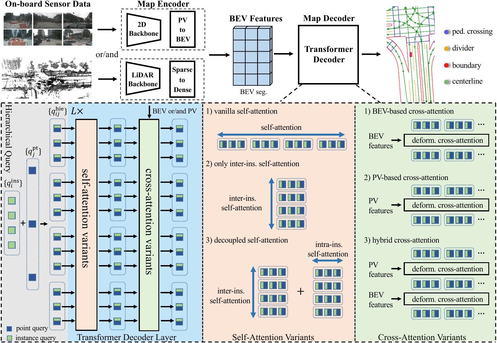</p> <p class="mini muted">Cameras or LiDAR become a BEV. One query per map element, and one per point along it, decode the polylines.</p> <div class="source">Architecture figure: <a href="https://arxiv.org/abs/2308.05736">Liao et al., IJCV 2025</a></div> --- ## Online mapping in action <video class="diagram" data-autoplay muted loop playsinline src="./videos/maptr-demo.mp4"></video> <div class="source">Demo video: <a href="https://github.com/hustvl/MapTR">hustvl/MapTR</a></div> --- ## Topology and traffic-control association - Geometry alone does not say which lanes connect - A traffic light must be linked to the lane(s) it controls - A traffic sign is the same problem one step further: the rule has to be tied to the centerlines it governs - Scene graphs encode lane ↔ lane and lane ↔ traffic-element relations - Association errors can be more dangerous than small geometric errors <div class="callout activity fragment"><span class="tag">Food for thought</span><p class="mini">What matters more, the map or the association? Would you rather have errors in the lanes, or a perfect lane tied to the wrong traffic light?</p></div> <div class="source fragment"><a href="https://arxiv.org/abs/2304.10440">OpenLane-V2 — topology benchmark</a> · <a href="https://arxiv.org/abs/2410.23780">Driving by the Rules — Chang et al., CVPR 2025</a></div> Note: Leave this open. A wrong light-to-lane link is the error you feel first: you enter on red, or stop in a green lane. A missing or crooked lane is the error that removes the thing you would associate, which is the point of the next slide. OpenLane-V2 scores the links separately from the geometry. MapDR asks the same question for a sign's rule and the centerlines it governs. --- ## TopoMLP: detect first, then reason - Topology reasoning = centerline detection + traffic-element detection + lane–lane and lane–traffic relations - Key finding: topology scores depend mostly on detection quality—with frozen detectors, swapping in ground-truth topology adds little - So: two strong detectors (3D lanes as Bézier curves, 2D traffic elements), then two small MLP heads that score every pair - Simple and strong: 41.2 OLS on OpenLane-V2 with ResNet-50; winner of the first OpenLane Topology challenge <p class="thought fragment">A traffic light you never detected cannot be associated with anything.</p> <div class="source fragment"><a href="https://arxiv.org/abs/2310.06753">TopoMLP — Wu et al., ICLR 2024</a></div> --- ## TopoMLP in the scene <p>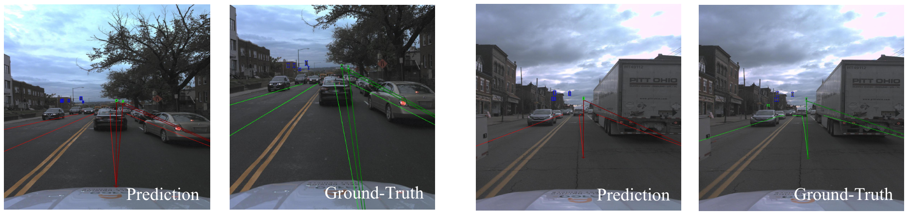</p> <p class="mini muted">Front view, prediction beside ground truth. Each line ties a lane to the traffic element that controls it. Red is the prediction, green is the ground truth.</p> <div class="source">Figure: <a href="https://arxiv.org/abs/2310.06753">Wu et al., ICLR 2024</a></div> --- <!-- .slide: class="no-fragments" --> ## Try it yourself: mapping & topology - **Datasets:** [Argoverse 2](https://www.argoverse.org/av2.html), [OpenLane-V2](https://github.com/OpenDriveLab/OpenLane-V2), nuScenes maps - **Toolkits:** [MapTR](https://github.com/hustvl/MapTR) and [TopoMLP](https://github.com/wudongming97/TopoMLP) code, [av2 API](https://github.com/argoverse/av2-api) - **Colab-sized:** extract lane centerlines from segmentation - **Evaluation idea:** test polyline simplification or lane-link classification - **Extension:** detect map changes or model traffic-light-to-lane association --- <!-- .slide: class="section-slide" --> # Task 4 — Motion forecasting ### The future is multimodal --- ## What are other agents likely to do? - **Input:** agent history, map context, traffic state, interactions - **Output:** multiple future trajectories and their probabilities - Horizon matters: 1 second is control; 6+ seconds is intent and interaction - Forecasting sits at the boundary between perception and planning - Some may argue that ego forecasting is actually planning from a different perspective. --- ## Why forecasting is important <img class="diagram medium" src="./img/forecasting.svg" data-light-src="./img/forecasting-light.svg" alt="Ego stopped at a four-exit roundabout while a vehicle on the left may leave on the ego road, probability 0.40, stay in the circle, probability 0.35, or take the left exit, probability 0.25"> <div class="callout activity fragment"><span class="tag">Food for thought</span><p class="mini">Will you enter the roundabout or wait?<br>What is a threshold for probability you would mark as secure?<br>What is the cost of waiting?</p></div> --- ## Forecasting inherits perception errors - Benchmarks hand the model clean, curated tracks and an HD map - In the car, inputs come from your own detector, tracker, and online map - Missed detections, identity switches, and jittery headings become forecasting errors - One motivation for joint training (UniAD, PARA-Drive): let forecasting losses shape perception features <p class="thought fragment">Garbage in, multimodal garbage out.</p> --- ## Why one future is not enough <div class="two-c-container"> <div class="two-c-col"> <h4>One trajectory, one place</h4> <ul> <li>The vehicle may take your lane, stay in the circle, or exit left</li> <li>Six seconds later those are three different positions</li> <li>A single output keeps one of them. The planner never sees the other two</li> </ul> </div> <div class="two-c-col"> <h4>A useful model needs</h4> <ul> <li><strong>Diverse modes</strong> — the real maneuvers are in the set</li> <li><strong>Reasonable probabilities</strong> — 0.40 is heavier than 0.25</li> <li><strong>Social consistency</strong> — your move and theirs can happen together</li> </ul> </div> </div> --- ## QCNet: encode the scene once, then the futures - An agent-centric model puts the origin on the car at the current instant. One frame later that origin has moved, so the history and the map are encoded again - QCNet anchors each past state and each lane in its own frame. The embedding of a turn does not change if the map is rotated, and it stays valid as the car moves - Attention adds only the relative pose between two elements. Every agent, including the neighbors, reads this same cache - Six queries propose futures step by step, so a distant exit can look at a different part of the map than the next meter - A second pass corrects those proposals and gives each one a probability <div class="source fragment"><a href="https://openaccess.thecvf.com/content/CVPR2023/html/Zhou_Query-Centric_Trajectory_Prediction_CVPR_2023_paper.html">QCNet — Zhou et al., CVPR 2023</a></div> --- ## QCNet in the scene <p>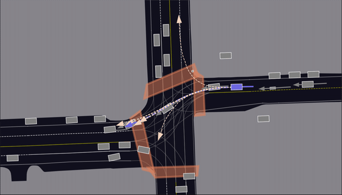</p> <div class="source">Figure: <a href="https://github.com/ZikangZhou/QCNet">Zhou et al., CVPR 2023</a></div> --- ## Example of real-time forecasting <video class="diagram wide" data-autoplay muted loop playsinline src="./videos/goirl-forecast.mp4"></video> <div class="source"><a href="https://arxiv.org/abs/2506.21121">GoIRL — Pei et al., ICML 2025</a> · clip from the <a href="https://youtu.be/MPECgueGRaQ?t=178">supplementary video</a></div> --- ## Interaction is the hard part - Agents react to one another and to the ego vehicle - Independent predictions can be mutually impossible - Joint prediction scales combinatorially with agents and modes - The predictor can change behavior when coupled to a planner <div class="callout quiz fragment"><span class="tag">Question</span><p class="mini">If six trajectories are predicted and one matches perfectly—but receives 30% probability—is that a good forecast?</p></div> Note: Intended answer: it depends on the metric, and that is the point. minADE/minFDE only look at the best of the six, so they call it perfect. Probability-aware metrics (Brier-minFDE, NLL) punish it, and so would a planner, which will treat a low-probability future as nearly impossible. The metrics slides are hidden, so make this point here. --- <!-- .slide: class="no-fragments" --> ## Try it yourself: motion forecasting - **Datasets:** [Argoverse 2 Motion Forecasting](https://www.argoverse.org/av2.html), [Waymo Motion](https://waymo.com/open/data/motion/) - **Toolkits:** [av2 API](https://github.com/argoverse/av2-api) and the public [QCNet](https://github.com/ZikangZhou/QCNet) code - **Colab-sized:** compare constant velocity, GRU, and a compact Transformer - **Evaluation idea:** measure both displacement error and calibration - **Extension:** add map context, interaction, or probability calibration --- <!-- .slide: class="section-slide" --> # Multitask learning One shared world, many sensors, many outputs --- <!-- .slide: class="hidden-slide" --> ## Where should sensor fusion happen? <div class="fusion-levels"> <div><b>Early</b><small>raw measurements</small></div> <div><b>Feature</b><small>image / point / BEV features</small></div> <div><b>Object</b><small>detections and tracks</small></div> <div><b>Decision</b><small>late agreement</small></div> </div> - Early fusion preserves information but needs tight alignment - Late fusion is modular but may discard useful cross-modal cues - Missing sensors and calibration errors must be part of training and testing --- <!-- .slide: class="hidden-slide" --> ## BEVFusion: meet in a common space - Camera and LiDAR features are independently encoded - Cameras are lifted to BEV (Lift-Splat style), LiDAR is flattened to BEV, then the two are fused - The common metric frame simplifies multi-task heads: 3D detection and map segmentation - Real deployment question: what happens when one modality disappears? <video class="diagram strip" data-autoplay muted loop playsinline src="./videos/bevfusion-demo.mp4"></video> <div class="source"><a href="https://arxiv.org/abs/2205.13542">BEVFusion — Liu et al., ICRA 2023</a> · demo from <a href="https://github.com/mit-han-lab/bevfusion">mit-han-lab/bevfusion</a></div> --- ## Multitask learning <div class="two-c-container"> <div class="two-c-col"> <h4>Why share?</h4> <ul><li>compute efficiency</li><li>shared geometry</li><li>richer supervision</li><li>Trained jointly, planning can use the latent space freely, in a way that serves the decision</li></ul> </div> <div class="two-c-col"> <h4>Why not?</h4> <ul><li>negative transfer</li><li>loss balancing</li><li>coupled failures</li><li>Each task may pull that space in a different direction, leaving an embedding too weak for every task</li></ul> </div> </div> <div class="thought fragment">A shared backbone can learn common sense—or become the single point where every task fails together.</div> --- ## UniAD: planning-oriented integration - Query-based interfaces connect tracking, mapping, motion prediction, occupancy, and planning - Joint optimization makes downstream objectives visible upstream - Influential research design, not proof that modular systems are obsolete - Integration improves information flow but complicates diagnosis and safety evidence <div class="source fragment"><a href="https://arxiv.org/abs/2212.10156">UniAD — Hu et al., CVPR 2023 Best Paper</a></div> --- ## UniAD pipeline <p>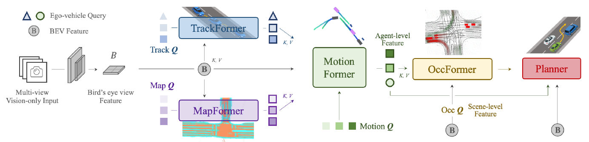</p> <p class="mini muted">Queries pass forward. Tracks and the map feed motion, motion feeds occupancy, and the planner reads the ego query together with the BEV.</p> <div class="source">Figure: <a href="https://arxiv.org/abs/2212.10156">Hu et al., CVPR 2023</a></div> --- ## UniAD in action <video class="diagram" data-autoplay muted loop playsinline src="./videos/uniad-demo.mp4"></video> <p class="mini muted">One network: tracked agents, predicted motion, occupancy, and the planned ego path (BEV, right) from six cameras.</p> <div class="source">Demo video: <a href="https://github.com/OpenDriveLab/UniAD">OpenDriveLab/UniAD</a></div> --- ## PARA-Drive: parallel multitask learning - Co-trains **online mapping**, **tracking + motion prediction**, **occupancy**, and **motion planning** - Every task uses its own learnable queries over shared current and historical BEV features - Modules run in parallel instead of forming a sequential dependency chain - The planning head can run independently after training; other heads may run less frequently - Reported nearly **3× faster** runtime while retaining interpretable task outputs <div class="source fragment"><a href="https://openaccess.thecvf.com/content/CVPR2024/html/Weng_PARA-Drive_Parallelized_Architecture_for_Real-time_Autonomous_Driving_CVPR_2024_paper.html">PARA-Drive — Weng et al., CVPR 2024</a></div> --- ## PARA-Drive architecture <p>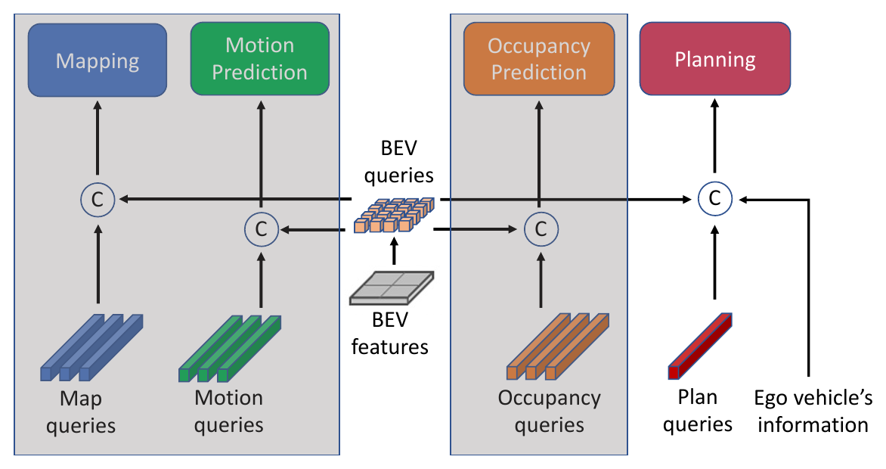</p> <p class="mini muted">Mapping, motion, occupancy, and planning each keep their own queries and read the same BEV. No head waits on another head's output.</p> <div class="source">Figure: <a href="https://openaccess.thecvf.com/content/CVPR2024/html/Weng_PARA-Drive_Parallelized_Architecture_for_Real-time_Autonomous_Driving_CVPR_2024_paper.html">Weng et al., CVPR 2024</a></div> --- <!-- .slide: class="section-slide hidden-slide" --> # Measuring perception A leaderboard is not a driver's license. --- <!-- .slide: class="hidden-slide" --> ## Detection and tracking metrics - **AP / mAP:** precision–recall across classes and thresholds - **NDS:** nuScenes mAP plus translation, scale, orientation, velocity, attributes - **mAP / mAPH:** Waymo detection with heading-aware quality - **AMOTA / ID errors:** tracking quality and association consistency - Slice by distance, object size, class, occlusion, weather, and time of day - Averages can hide exactly the rare cases that matter --- <!-- .slide: class="hidden-slide" --> ## Occupancy and mapping metrics - **IoU / mIoU:** overlap per semantic class - **RayIoU:** evaluates first-surface consistency along rays - Distinguish **free**, **occupied**, and **unobserved/unknown** - **Vector-map AP:** match polylines within distance thresholds - **Topology metrics:** score lane links and traffic-element associations <div class="callout takeaway"><span class="tag">Metric design</span><p class="mini">If the metric ignores visibility, the model may be punished for refusing to hallucinate behind a truck.</p></div> --- <!-- .slide: class="hidden-slide" --> ## Forecasting metrics - **minADE<sub>K</sub>:** best average displacement error among K modes - **minFDE<sub>K</sub>:** best final displacement error - **Miss rate:** fraction outside an endpoint tolerance - **Brier / NLL / calibration:** whether probabilities mean what they claim <div class="warning">Best-of-K can reward “spray and pray”: generate many modes and hope one is close.</div> --- <!-- .slide: class="hidden-slide" --> ## System KPIs - **Latency:** include pre-processing and post-processing - **Throughput:** sustain required sensor rates - **Memory and power:** measure on target hardware - **Graceful degradation:** test dropout, corruption, and misalignment - **Calibration:** compare confidence with observed error - **Safety slices:** near field, vulnerable road users, and rare events <p class="thought">The planner cannot brake for a high mIoU score.</p> --- <!-- .slide: class="section-slide hidden-slide" --> # Risks and hard problems Perception fails in distributions, not only in averages. --- <!-- .slide: class="hidden-slide" --> ## The long tail and the open world - Rare objects: fallen cargo, unusual vehicles, animals, debris - Rare combinations: glare + rain + construction + occlusion - Unknown objects may not fit any training class - Data collection naturally oversamples ordinary driving <div class="callout activity fragment"><span class="tag">Food for thought</span><p class="mini">How many kilometers must we drive to observe an event that occurs once every 100 million kilometers—often enough to validate it?</p></div> Note: Intended answer: far more than 100 million. With zero failures, showing a rate below 1 per 100 million km at 95% confidence needs about 300 million failure-free km (rule of three); comparing against human drivers with statistical power needs billions. RAND's "Driving to Safety" (Kalra & Paddock, 2016) makes the same argument in miles. This is why simulation and scenario-based testing matter. --- <!-- .slide: class="hidden-slide" --> ## Uncertainty, confidence, and bias - Neural confidence is not automatically calibrated probability - Epistemic uncertainty: the model lacks knowledge - Aleatoric uncertainty: the scene itself is ambiguous - Dataset geography, lighting, annotation, and demographic imbalance affect error rates - A safe interface needs “I do not know” and measurable fallback behavior --- <!-- .slide: class="hidden-slide" --> ## Corruption, domain shift, and silent failure <div class="failure-row"> <span>fog</span><span>glare</span><span>snow</span><span>dirty sensor</span><span>new city</span><span>sensor dropout</span> </div> - Cross-sensor misalignment can poison fusion instead of helping - Temporal models can propagate one bad observation - Shared multitask features can spread a failure across outputs - Monitoring must detect changing data and changing error patterns <div class="source"><a href="https://openaccess.thecvf.com/content/CVPR2023/html/Dong_Benchmarking_Robustness_of_3D_Object_Detection_to_Common_Corruptions_CVPR_2023_paper.html">nuScenes-C robustness benchmark — CVPR 2023</a></div> --- <!-- .slide: class="hidden-slide" --> ## Offline accuracy ≠ closed-loop safety - A detector metric weights errors differently from a planner - Small map-topology errors can cause large route errors - The planner may compensate for some perception mistakes—and amplify others - Deployment changes the data distribution through feedback <div class="warning">Necessary: strong offline metrics. Insufficient: claiming safe driving from offline metrics alone.</div> Note: Keep this section compact and perception-focused. The goal is critical thinking, not a second AI-safety lecture. --- <!-- .slide: class="section-slide" --> # Frontiers Simulation · world models · end-to-end · VLM, VLA, decisions --- ## Generative AI for simulation - **Generative**: synthesize scenes, actors, weather, and sensor observations—target rare scenarios that are expensive or dangerous to collect - **Reconstruction-based**: rebuild a recorded drive as an editable digital twin (NeRF, 3D Gaussian splatting), then move actors and the ego vehicle and re-render camera and LiDAR for closed-loop tests - Edit an observed scene while preserving controllable factors - Use synthetic data for training, validation, and stress testing <div class="callout quiz fragment"><span class="tag">But</span><p class="mini">Photorealistic is not the same as physically correct, causally useful, or safety-representative.</p></div> <div class="source fragment"><a href="https://arxiv.org/abs/2309.09777">DriveDreamer</a> · <a href="https://arxiv.org/abs/2309.17080">GAIA-1</a> · <a href="https://arxiv.org/abs/2308.01898">UniSim — CVPR 2023</a> · <a href="https://arxiv.org/abs/2401.01339">Street Gaussians — ECCV 2024</a></div> --- ## Generated conditions, one real clip <video class="diagram wide" data-autoplay muted loop playsinline src="./videos/cosmos-weather.mp4"></video> <p class="mini muted">One public dashcam clip. Cosmos-Drive-Dreams keeps the layout and generates other weather, a depth image, and an HD map.</p> <div class="source"><a href="https://research.nvidia.com/labs/toronto-ai/cosmos_drive_dreams/">Cosmos-Drive-Dreams — Ren et al., NVIDIA</a></div> --- ## Generated from a control video <video class="diagram wide" data-autoplay muted loop playsinline src="./videos/cosmos-control.mp4"></video> <p class="mini muted">The left video is the only geometric input: lanes, one vehicle box, and a sign. Cosmos-Drive-Dreams paints the street, the car, and the stop sign from that control.</p> <div class="source"><a href="https://research.nvidia.com/labs/toronto-ai/cosmos_drive_dreams/">Cosmos-Drive-Dreams — Ren et al., NVIDIA</a></div> --- ## A rare scene, generated <video class="diagram wide" data-autoplay muted loop playsinline src="./videos/cosmos-cow.mp4"></video> <p class="mini muted">Prompt: a cow runs across a forest road. Six cameras of that scene are synthesized together. This is the kind of event a fleet almost never logs.</p> <div class="source"><a href="https://research.nvidia.com/labs/toronto-ai/cosmos_drive_dreams/">Cosmos-Drive-Dreams — Ren et al., NVIDIA</a></div> --- ## The world, as 3D Gaussians <video class="diagram wide" data-autoplay muted loop playsinline src="./videos/gaussian-world.mp4"></video> <p class="mini muted">WorldSplat’s second example, seen from above. A night intersection: the road, the buildings, and the vehicles, including a bus, are a cloud of 3D Gaussians.</p> <div class="source"><a href="https://arxiv.org/abs/2509.23402">WorldSplat — Zhu et al., 2025</a> · <a href="https://wm-research.github.io/worldsplat/">project page</a></div> --- ## A recorded drive, rebuilt with Gaussians <video class="diagram wide" data-autoplay muted loop playsinline src="./videos/driving-gaussian.mp4"></video> <p class="mini muted">Same nuScenes scene, re-rendered. Left: one set of 3D Gaussians for the whole street, so moving cars smear. Right: DrivingGaussian keeps the static street and the moving objects apart.</p> <div class="source"><a href="https://arxiv.org/abs/2312.07920">DrivingGaussian — Zhou et al., CVPR 2024</a> · clip from the <a href="https://pkuvdig.github.io/DrivingGaussian/">project page</a></div> --- ## Learned world models <p class="fragment">Given the scene now, a world model predicts the scene a moment later.</p> - **What it predicts:** pixels, a latent embedding, an occupancy grid, or depth and semantics. Pixels must match the image. A latent keeps a compact summary of the scene - **Where the label comes from:** the next recorded observation. The sequence supervises itself - **Why that is powerful:** a web video, a raw camera, or a LiDAR log is already a training example. Almost every recorded sequence can be used --- ## Drive-JEPA: predict the future in latent space - A vision transformer is pretrained on front-camera video to predict the embedding of masked future frames. It does not reconstruct the pixels - The pretraining set is about 330 hours of driving, cut into 8-frame clips at 2 Hz. The target embedding comes from a slowly updated copy of the same encoder - A planner then reads those features and proposes many trajectories, anchored at waypoints, and refines them - Each proposal is trained on the logged human path and on extra paths a simulator marks as safe and comfortable. One recorded drive is only one legal choice - A scorer picks one proposal from collision risk, traffic rules, comfort, and agreement with the previous decision <div class="source fragment"><a href="https://arxiv.org/abs/2601.22032">Drive-JEPA — Wang et al., 2026</a></div> --- ## Drive-JEPA architecture <p>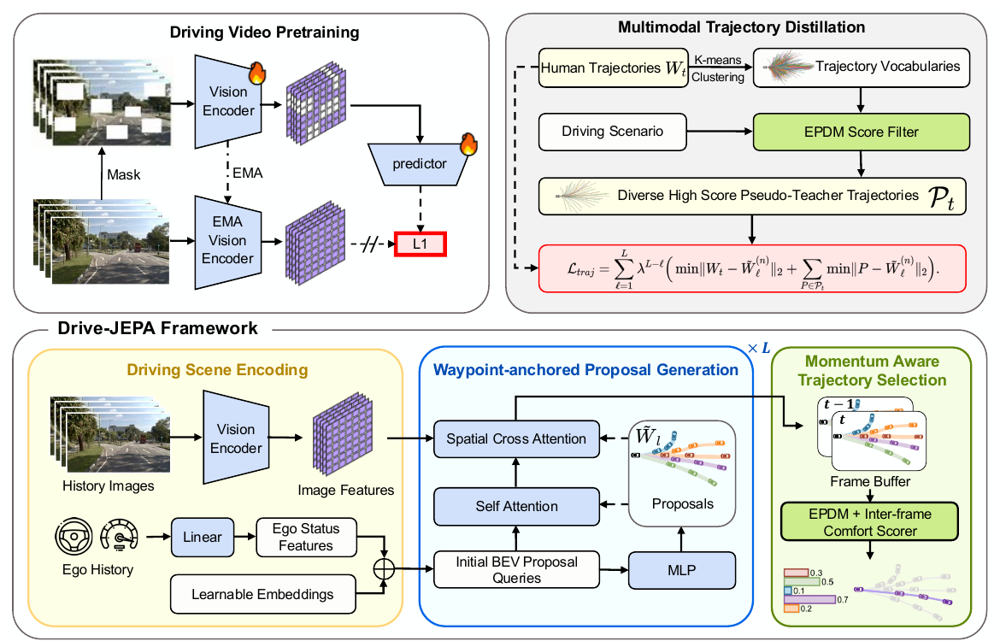</p> <p class="mini muted">Top left: the encoder learns by predicting the embedding of masked frames. Top right: the simulator turns a trajectory vocabulary into extra safe targets. Bottom: features in, proposals refined, one trajectory selected.</p> <div class="source">Figure: <a href="https://arxiv.org/abs/2601.22032">Wang et al., 2026</a></div> --- ## DriveLaW: plan from the video latent - A video diffusion model is trained to continue a driving clip. Its latent packs the scene, the motion, and the layout into one state - The planner is a second diffusion model. It reads that same latent and writes a trajectory, with no separate bird’s-eye-view features - Video and planning are trained in stages, so the two losses do not pull the shared state apart - On nuScenes future-video prediction it leads the methods it compares: FID 4.6 and FVD 81.3 - On NAVSIM it scores 89.1 PDMS from one camera, with no learned scorer after the planner <div class="source fragment"><a href="https://openaccess.thecvf.com/content/CVPR2026/html/Xia_DriveLaW_Unifying_Planning_and_Video_Generation_in_a_Latent_Driving_CVPR_2026_paper.html">DriveLaW — Xia et al., CVPR 2026</a></div> --- ## DriveLaW architecture <p>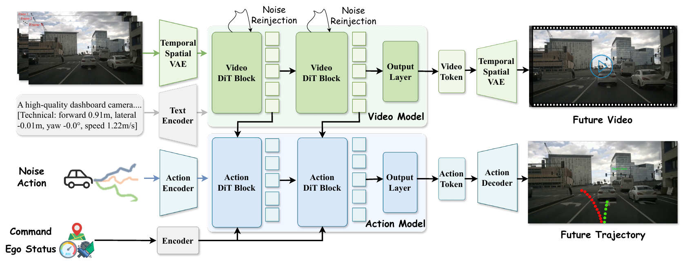</p> <p class="mini muted">Top row: the video model continues the clip. Bottom row: the action model reads the video blocks’ latents, together with the command and ego status, and decodes the trajectory.</p> <div class="source">Figure: <a href="https://openaccess.thecvf.com/content/CVPR2026/html/Xia_DriveLaW_Unifying_Planning_and_Video_Generation_in_a_Latent_Driving_CVPR_2026_paper.html">Xia et al., CVPR 2026</a></div> --- ## End-to-end driving <img class="diagram wide transparent" src="./img/ad-stack-merged.svg" data-light-src="./img/ad-stack-merged-light.svg" alt="The autonomous-driving stack with localization, perception, prediction, and planning merged into one learned network"> - **Modular:** interpretable interfaces and local validation - **End-to-end:** sensors in, trajectory out—joint optimization, but difficult diagnosis - The real spectrum includes modular, jointly trained (UniAD, PARA-Drive), and fully end-to-end systems Note: Callback to the stack from the beginning: the overlapping circles were a hint. End-to-end is the limit where they merge into one network. --- ## How do we know an end-to-end driver is good? - **Open-loop** (nuScenes): compare the planned path with the logged human path—cheap, but the car never sees the consequences - On nuScenes, 73.9% of the data is straight driving; an MLP that sees only ego status (velocity, acceleration, yaw) matches state-of-the-art planners on L2 and collision rate - **Non-reactive simulation** (NAVSIM): score progress, collisions, and comfort on real data over a short horizon - **Closed-loop** (CARLA, Bench2Drive): the policy drives, and the world reacts <p class="thought fragment">If a model ignoring every camera matches your planner, the benchmark is grading the speedometer.</p> <div class="source fragment"> <a href="https://arxiv.org/abs/2312.03031">Is Ego Status All You Need? — Li et al., CVPR 2024</a> · <a href="https://arxiv.org/abs/2406.15349">NAVSIM — NeurIPS 2024</a> · <a href="https://arxiv.org/abs/2406.03877">Bench2Drive — NeurIPS 2024</a> </div> --- ## VLMs, VLAs, decision models, and open vocabulary - **VLM:** connect visual features and language concepts - **VLA:** condition actions on vision and language/instructions - **Decision model:** score each offered choice with a probability. JEV reads the images and the text and answers in one pass - **Open-vocabulary perception:** detect or segment from a text query, such as “fallen mattress” or “horse cart,” including obstacles that were never in the class list - Potential: semantic reasoning, explainable interfaces - Risks: hallucination, latency, weak grounding, unfaithful explanations <div class="source fragment"><a href="https://arxiv.org/abs/2312.14150">DriveLM</a> · <a href="https://arxiv.org/abs/2410.23262">EMMA</a> · <a href="https://huggingface.co/autotrust/JEV-27B-VL">JEV</a></div> --- ## Research directions - **Open world:** calibrated probabilities for novel objects and choices, with open-vocabulary models and JEV - **Rare events and bad sensors:** Cosmos-Drive-Dreams for scenes the fleet never logs, then dirty lenses, dropped sensors, and new cities - **Occupancy and maps:** faster occupancy with SparseOcc, and map changes with Neural Map Prior - **Futures you can act on:** QCNet, Drive-JEPA, and DriveLaW, judged on what the action causes - **End-to-end with evidence:** UniAD and PARA-Drive, scored on NAVSIM, and Bench2Drive where the world reacts --- <!-- .slide: class="hidden-slide" --> ## Project ladder - **Course project:** pretrained model + small dataset slice + one clear hypothesis - **Strong project:** add temporal context, calibration, robustness, or a lightweight architecture change - **Thesis with us:** occupancy efficiency, sensor degradation, topology, multimodal forecasting, or simulation-to-real validation <p class="thought">Small and well-measured beats large and impossible to reproduce.</p> --- ## Looking in the Rearview Mirror 1. **Obstacles.** Detect, localize, and classify, then keep the same identity over time. 2. **Occupancy.** A grid of free, occupied, and unknown space, including shapes that have no box. 3. **Mapping and topology.** Lanes, boundaries, and the links between them, from a stored map or from the cameras. 4. **Forecasting.** Several futures and their probabilities, built on the tracks and the map. 5. **End-to-end.** UniAD and PARA-Drive train those tasks with planning, up to sensors in and a trajectory out. Open-loop, NAVSIM, and closed-loop test different things. 6. **Left out today.** Task metrics, the long tail, uncertainty and bias, sensor corruption, and the distance between an offline score and a safe drive. --- ## Looking through the Windshield <p class="fragment">Autonomous driving is unsolved. This lecture was the map of the field, and a large part of that map is still open research.</p> <ul> <li class="fragment"><strong>Still unanswered:</strong> the rare object, the failed sensor, a confidence you can trust, and a test in which the world reacts</li> <li class="fragment"><strong>Where the field is working:</strong> forecasting, world models, simulation, and end-to-end driving. Each one leaves the next question open</li> <li class="fragment"><strong>Where you come in:</strong> one hypothesis, one experiment, one result you can stand behind</li> </ul> --- <!-- .slide: data-state="folks-card" class="folks-slide" data-background-image="./img/folks-rings.svg" data-background-size="cover" data-background-color="#c8102e" data-transition="fade" data-transition-speed="slow" data-background-transition="fade" --> # That's all Folks! --- <!-- .slide: class="title-slide end-slide" --> # Questions? <br> <h3 class="fragment">Discussion prompts</h3> - Which perception output would you trust least today? - Boxes, occupancy, or vectors: what should the primary scene representation be? - What evidence would convince you that a world model improves safety? --- <!-- .slide: class="title-slide end-slide closing-slide" --> # Deep Learning Perception ## for Autonomous Driving **Gabriele Graffieti** <span class="subtitle">Autonomous Driving and ADAS Technologies Seminar</span> <div class="title-meta"> <span>University of Parma</span> <span>Nov. 9, 2026</span> </div> <p class="print-hint">Pick one. Both open the browser dialog.</p> <div class="print-choices"> <a class="print-deck" data-print="mono" href="?theme=print&print-pdf=1&autoprint=1"> <strong>Print in black and white</strong> <span>Monochrome, for a paper copy.</span> </a> <a class="print-deck" data-print="color" href="?theme=dark&print-pdf=1&autoprint=1"> <strong>Save a color PDF</strong> <span>Keeps the colors you see now. Choose Save as PDF.</span> </a> </div>